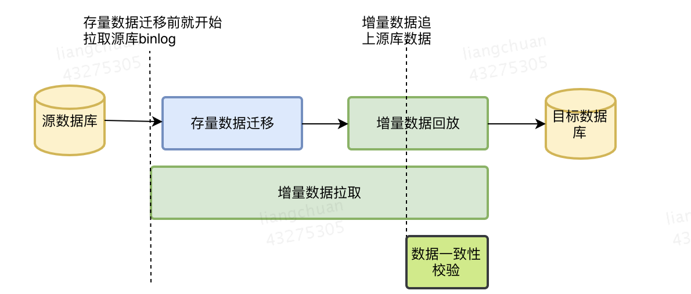

<!DOCTYPE html>
<html>
<head><meta name="generator" content="Hexo 3.9.0">
  <meta charset="utf-8">
  
  <title> MySQL 与数据迁移 | 守株阁</title>
  <meta name="viewport" content="width=device-width, initial-scale=1, maximum-scale=1">
  <meta name="description" content="如何不停机地进行数据迁移要做到不停机的平滑数据迁移，需要使用标准化流程，寻找一个合理的批次切分点，对存量数据和增量数据进行迁移。 注意：  增量迁移过程中，最好不要修改源表的表结构，即执行 DDL 语句。 增量迁移过程中，不要修改源表主键的值（即自增主键），很容易造成目标表 insert 冲突。   一般的校验机制是校验新老库的最后 1000-10000 条数据是否一致。校验的时候要对原表加读锁（">
<meta name="keywords" content="系统架构,MySQL">
<meta property="og:type" content="article">
<meta property="og:title" content=" MySQL 与数据迁移">
<meta property="og:url" content="http://yoursite.com/2020/08/15/MySQL-与数据迁移/index.html">
<meta property="og:site_name" content="守株阁">
<meta property="og:description" content="如何不停机地进行数据迁移要做到不停机的平滑数据迁移，需要使用标准化流程，寻找一个合理的批次切分点，对存量数据和增量数据进行迁移。 注意：  增量迁移过程中，最好不要修改源表的表结构，即执行 DDL 语句。 增量迁移过程中，不要修改源表主键的值（即自增主键），很容易造成目标表 insert 冲突。   一般的校验机制是校验新老库的最后 1000-10000 条数据是否一致。校验的时候要对原表加读锁（">
<meta property="og:locale" content="zh-Hans">
<meta property="og:image" content="http://yoursite.com/2020/08/15/MySQL-与数据迁移/增量数据迁移.png">
<meta property="og:updated_time" content="2020-08-15T08:52:15.288Z">
<meta name="twitter:card" content="summary">
<meta name="twitter:title" content=" MySQL 与数据迁移">
<meta name="twitter:description" content="如何不停机地进行数据迁移要做到不停机的平滑数据迁移，需要使用标准化流程，寻找一个合理的批次切分点，对存量数据和增量数据进行迁移。 注意：  增量迁移过程中，最好不要修改源表的表结构，即执行 DDL 语句。 增量迁移过程中，不要修改源表主键的值（即自增主键），很容易造成目标表 insert 冲突。   一般的校验机制是校验新老库的最后 1000-10000 条数据是否一致。校验的时候要对原表加读锁（">
<meta name="twitter:image" content="http://yoursite.com/2020/08/15/MySQL-与数据迁移/增量数据迁移.png">
  
    <link rel="alternate" href="/atom.xml" title="守株阁" type="application/atom+xml">
  
  
    <link rel="icon" href="/favicon.png">
  
  
  <link rel="stylesheet" href="/css/style.css">
  

<link rel="stylesheet" href="/css/prism.css" type="text/css">
<link rel="stylesheet" href="/css/prism-line-numbers.css" type="text/css"></head>
</html>
<body>
  <div id="container">
    <div id="wrap">
      <header id="header">
  <div id="banner"></div>
  <div id="header-outer" class="outer">
    
    <div id="header-inner" class="inner">
      <nav id="sub-nav">
        
          <a id="nav-rss-link" class="nav-icon" href="/atom.xml" title="RSS Feed"></a>
        
        <a id="nav-search-btn" class="nav-icon" title="搜索"></a>
      </nav>
      <div id="search-form-wrap">
        <form action="//google.com/search" method="get" accept-charset="UTF-8" class="search-form"><input type="search" name="q" class="search-form-input" placeholder="Search"><button type="submit" class="search-form-submit">&#xF002;</button><input type="hidden" name="sitesearch" value="http://yoursite.com"></form>
      </div>
      <nav id="main-nav">
        <a id="main-nav-toggle" class="nav-icon"></a>
        
          <a class="main-nav-link" href="/">首页</a>
        
          <a class="main-nav-link" href="/archives">归档</a>
        
          <a class="main-nav-link" href="/about">关于</a>
        
      </nav>
      
    </div>
    <div id="header-title" class="inner">
      <h1 id="logo-wrap">
        <a href="/" id="logo">守株阁</a>
      </h1>
      
        <h2 id="subtitle-wrap">
          <a href="/" id="subtitle">一切都是守株待兔，如切如磋，如琢如磨。I am just joking.</a>
        </h2>
      
    </div>
  </div>
</header>
      <div class="outer">
        <section id="main"><article id="post-MySQL-与数据迁移" class="article article-type-post" itemscope itemprop="blogPost">
  <div class="article-meta">
    <a href="/2020/08/15/MySQL-与数据迁移/" class="article-date">
  <time datetime="2020-08-15T07:54:30.000Z" itemprop="datePublished">2020-08-15</time>
</a>
    
  </div>
  <div class="article-inner">
    
    
      <header class="article-header">
        
  
    <h1 class="article-title" itemprop="name">
       MySQL 与数据迁移
    </h1>
  

      </header>
    
    <div class="article-entry" itemprop="articleBody">
      
        <!-- Table of Contents -->
        
        <h1 id="如何不停机地进行数据迁移"><a href="#如何不停机地进行数据迁移" class="headerlink" title="如何不停机地进行数据迁移"></a>如何不停机地进行数据迁移</h1><p>要做到不停机的平滑数据迁移，需要使用标准化流程，寻找一个合理的批次切分点，对存量数据和增量数据进行迁移。</p>
<p>注意：</p>
<ul>
<li>增量迁移过程中，最好不要修改源表的表结构，即执行 DDL 语句。</li>
<li>增量迁移过程中，不要修改源表主键的值（即自增主键），很容易造成目标表 insert 冲突。</li>
</ul>
<p></p>
<p>一般的校验机制是校验新老库的最后 1000-10000 条数据是否一致。校验的时候要对原表加读锁（S 锁），这样写操作会被禁止（禁止写的标准方法之一，不停机的停机）。这种锁表的时间最好维持在 1s 以内，如果存在多张表的迁移，最好并发同步，并发锁表，让迁移的停顿在 1 s 以内。</p>
<h1 id="平滑扩容"><a href="#平滑扩容" class="headerlink" title="平滑扩容"></a>平滑扩容</h1><ol>
<li>为原主库增加路由策略，如原本 id % 2 = 0的请求路由到库 1，现在 id % 4 = 0 和 id % 4 = 2 的请求路由到库 2。有些公司依赖于服务网关，有些公司依赖于 keeplived。</li>
<li>增加 db 的集群，先作为从库的集群，日后作为主库的集群-如果使用双主架构，此时可能会变成四主。</li>
<li>使用同步追加 binlog 的方式，让从库完全追上主库，可以作为主库使用-在从库数据追上的一瞬间，要给要同步的表加锁（还是 s lock），完全禁止写-然后验证数据一致性。</li>
<li>如果数据一致了，在这一瞬间切换 1 中的路由策略，把 id % 4 = 2 的请求路由到库 2。</li>
<li>如果 3-4 的时间比较久，整体的架构方案要有能够不生成 id % 4 = 2 的请求的方案，相当于可以临时禁掉对这部分 db 写的流量（对于整个业务集群而言，属于半停机）。这就要求，请求生成的序列号服务有管控流量的能力，这需要引入 redis 的 cluster 算法或者一致性散列等算法。</li>
<li>解除 4 主之间的同步，变成两两双主的同步。</li>
<li>把 id % 4 = 2 集群里的 id % 4 = 0 的数据删除，另一个集群以此类推。这样可以让容量整体增大一倍（性能则不止一倍）。</li>
</ol>

      
    </div>
    <footer class="article-footer">
      <a data-url="http://yoursite.com/2020/08/15/MySQL-与数据迁移/" data-id="ckovf254j00cjm3a18udvjvp4" class="article-share-link">分享</a>
      
      
      
  <ul class="article-tag-list"><li class="article-tag-list-item"><a class="article-tag-list-link" href="/tags/MySQL/">MySQL</a></li><li class="article-tag-list-item"><a class="article-tag-list-link" href="/tags/系统架构/">系统架构</a></li></ul>

    </footer>
  </div>
  
    
 <script src="/jquery/jquery.min.js"></script>
  <div id="random_posts">
    <h2>推荐文章</h2>
    <div class="random_posts_ul">
      <script>
          var random_count =4
          var site = {BASE_URI:'/'};
          function load_random_posts(obj) {
              var arr=site.posts;
              if (!obj) return;
              // var count = $(obj).attr('data-count') || 6;
              for (var i, tmp, n = arr.length; n; i = Math.floor(Math.random() * n), tmp = arr[--n], arr[n] = arr[i], arr[i] = tmp);
              arr = arr.slice(0, random_count);
              var html = '<ul>';
            
              for(var j=0;j<arr.length;j++){
                var item=arr[j];
                html += '<li><strong>' + 
                item.date + ':&nbsp;&nbsp;<a href="' + (site.BASE_URI+item.uri) + '">' + 
                (item.title || item.uri) + '</a></strong>';
                if(item.excerpt){
                  html +='<div class="post-excerpt">'+item.excerpt+'</div>';
                }
                html +='</li>';
                
              }
              $(obj).html(html + '</ul>');
          }
          $('.random_posts_ul').each(function () {
              var c = this;
              if (!site.posts || !site.posts.length){
                  $.getJSON(site.BASE_URI + 'js/posts.js',function(json){site.posts = json;load_random_posts(c)});
              } 
               else{
                load_random_posts(c);
              }
          });
      </script>
    </div>
  </div>

    
<nav id="article-nav">
  
    <a href="/2020/08/18/压力测试需要关注的注意事项/" id="article-nav-newer" class="article-nav-link-wrap">
      <strong class="article-nav-caption">上一篇</strong>
      <div class="article-nav-title">
        
          压力测试需要关注的注意事项
        
      </div>
    </a>
  
  
    <a href="/2020/08/02/常见的服务器调用堆栈/" id="article-nav-older" class="article-nav-link-wrap">
      <strong class="article-nav-caption">下一篇</strong>
      <div class="article-nav-title">常见的服务器调用堆栈</div>
    </a>
  
</nav>

  
</article>
 
     
  <div class="comments" id="comments">
    
     
       
      <div id="cloud-tie-wrapper" class="cloud-tie-wrapper"></div>
    
       
      
      
  </div>
 
  

</section>
           
    <aside id="sidebar">
  
    

  
    
    <div class="widget-wrap">
    
      <div class="widget" id="toc-widget-fixed">
      
        <strong class="toc-title">文章目录</strong>
        <div class="toc-widget-list">
              <ol class="toc"><li class="toc-item toc-level-1"><a class="toc-link" href="#如何不停机地进行数据迁移"><span class="toc-number">1.</span> <span class="toc-text">如何不停机地进行数据迁移</span></a></li><li class="toc-item toc-level-1"><a class="toc-link" href="#平滑扩容"><span class="toc-number">2.</span> <span class="toc-text">平滑扩容</span></a></li></ol>
          </div>
      </div>
    </div>

  
    

  
    
  
    
  
    

  
    
  
    <!--微信公众号二维码-->


  
</aside>

      </div>
      <footer id="footer">
  
  <div class="outer">
    <div id="footer-left">
      &copy; 2014 - 2021 magicliang&nbsp;|&nbsp;
      主题 <a href="https://github.com/giscafer/hexo-theme-cafe/" target="_blank">Cafe</a>
    </div>
     <div id="footer-right">
      联系方式&nbsp;|&nbsp;magicliang@qq.com
    </div>
  </div>
</footer>
 <script src="/jquery/jquery.min.js"></script>
    </div>
    <nav id="mobile-nav">
  
    <a href="/" class="mobile-nav-link">首页</a>
  
    <a href="/archives" class="mobile-nav-link">归档</a>
  
    <a href="/about" class="mobile-nav-link">关于</a>
  
</nav>
    
<script>
// Elevator script included on the page, already.
window.onload = function() {
  var elevator = new Elevator({
    selector:'.back-to-top-btn',
    element: document.querySelector('.back-to-top-btn'),
    duration: 1000 // milliseconds
  });
}
</script>
      

  
    <script>
      var cloudTieConfig = {
        url: document.location.href, 
        sourceId: "",
        productKey: "e2fb4051c49842688ce669e634bc983f",
        target: "cloud-tie-wrapper"
      };
    </script>
    <script src="https://img1.ws.126.net/f2e/tie/yun/sdk/loader.js"></script>
    

  


<!-- author:forvoid begin -->
<!-- author:forvoid begin -->

<!-- author:forvoid end -->

<!-- author:forvoid end -->


  
    <script type="text/x-mathjax-config">
      MathJax.Hub.Config({
        tex2jax: {
          inlineMath: [ ['$','$'], ["\\(","\\)"]  ],
          processEscapes: true,
          skipTags: ['script', 'noscript', 'style', 'textarea', 'pre', 'code']
        }
      })
    </script>

    <script type="text/x-mathjax-config">
      MathJax.Hub.Queue(function() {
        var all = MathJax.Hub.getAllJax(), i;
        for (i=0; i < all.length; i += 1) {
          all[i].SourceElement().parentNode.className += ' has-jax';
        }
      })
    </script>
    <script type="text/javascript" src="https://cdn.rawgit.com/mathjax/MathJax/2.7.1/MathJax.js?config=TeX-AMS-MML_HTMLorMML"></script>
  


 <script src="/js/is.js"></script>


  <link rel="stylesheet" href="/fancybox/jquery.fancybox.css">
  <script src="/fancybox/jquery.fancybox.pack.js"></script>


<script src="/js/script.js"></script>
<script src="/js/elevator.js"></script>
  </div>
</body>
</html>